guidance scale 決定編輯有沒有發生
全部是未防禦的原圖經 SDEdit 的結果，只差在
classifier-free guidance 的權重 w。w = 1.0 是本專案 E2–E23 全部實驗所用的
設定——`src/models/sd.py` 的 _eps 只以條件嵌入呼叫一次 UNet，
等同 w = 1；w = 7.5 是攻擊方實際會用的值。請按數字鍵（或點按鈕）
原地切換，判斷在哪一個 w 下，prompt 描述的東西真的出現了。
若只有 w ≥ 3 才看得出編輯，則 E2–E23 全部是在防禦一個不存在的攻擊，
那些實驗量到的 net_lpips 是兩次隨機去噪之間的漂移。
右側為 4× 最近鄰放大，位置取原圖梯度能量最高處，各版本同一座標。
car_00
prompt：a wrecked car after an accident
原圖 clip 0.2192

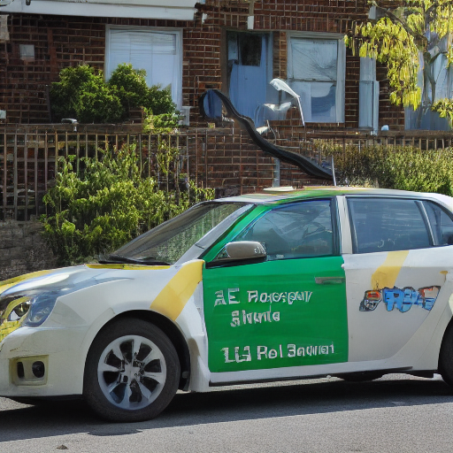
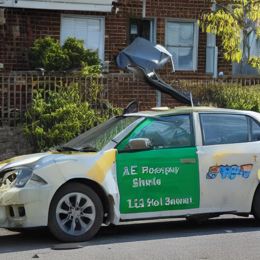

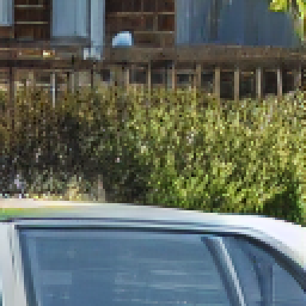
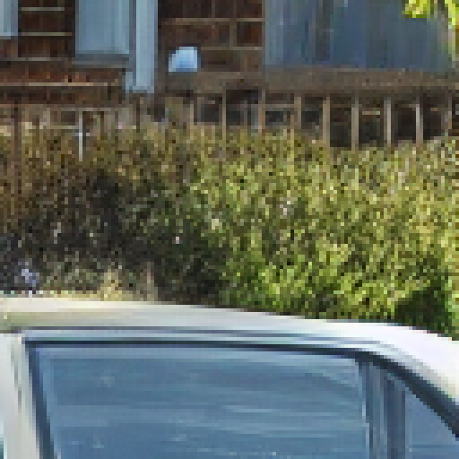
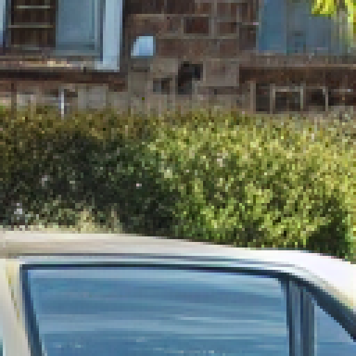
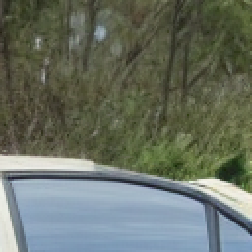
展開數值（先看圖）
| 量 | w1.0_s0.5（現行設定） | w3.0_s0.5 | w7.5_s0.5（標準攻擊） | w7.5_s0.7 |
|---|
| Δclip（對 prompt 的對齊變化） | -0.0013 | +0.0078 | +0.0547 | +0.0814 |
| Δsiglip | +0.0294 | +0.0498 | +0.0900 | +0.0985 |
| LPIPS→原圖 | 0.4529 | 0.4639 | 0.4987 | 0.6357 |
| PSNR→原圖 (dB) | 15.13 | 14.97 | 14.39 | 12.23 |
car_01
prompt：a wrecked car after an accident
原圖 clip 0.2771
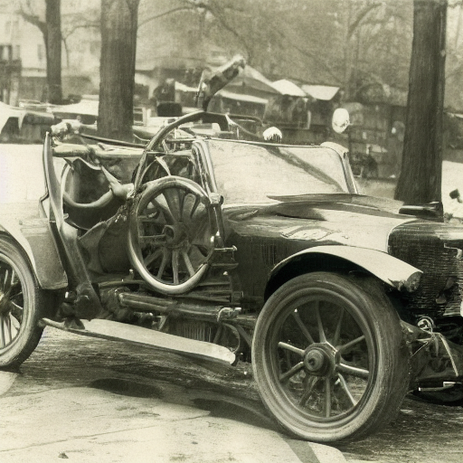
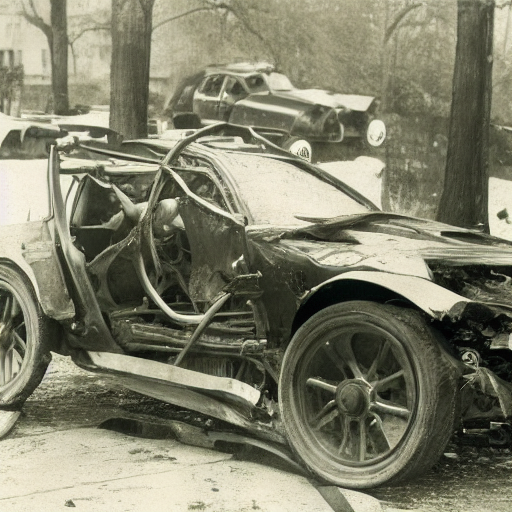
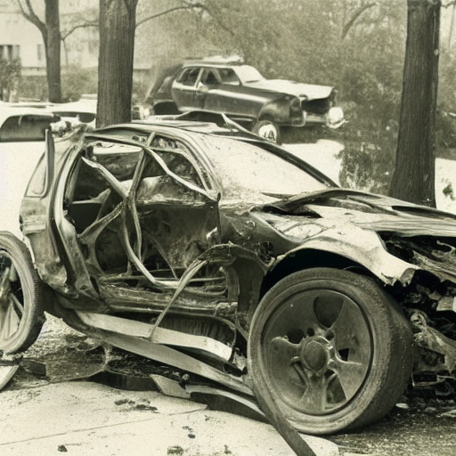
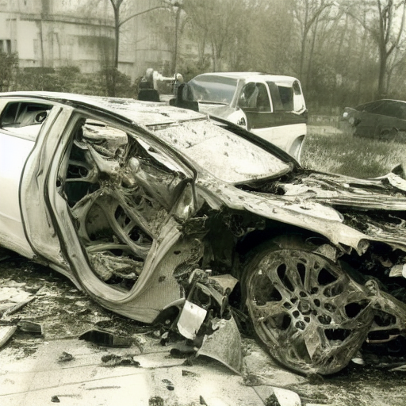
展開數值（先看圖）
| 量 | w1.0_s0.5（現行設定） | w3.0_s0.5 | w7.5_s0.5（標準攻擊） | w7.5_s0.7 |
|---|
| Δclip（對 prompt 的對齊變化） | +0.0245 | +0.0475 | +0.0453 | +0.0312 |
| Δsiglip | +0.0408 | +0.0782 | +0.0987 | +0.0937 |
| LPIPS→原圖 | 0.4977 | 0.5195 | 0.5478 | 0.6073 |
| PSNR→原圖 (dB) | 14.98 | 14.45 | 13.59 | 11.84 |
dog_00
prompt：a cat sitting on the grass
原圖 clip 0.1696

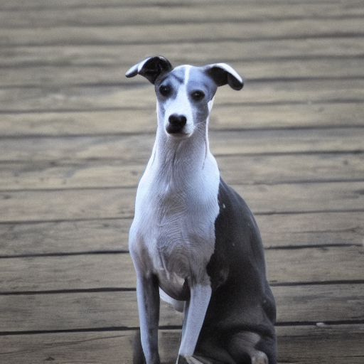
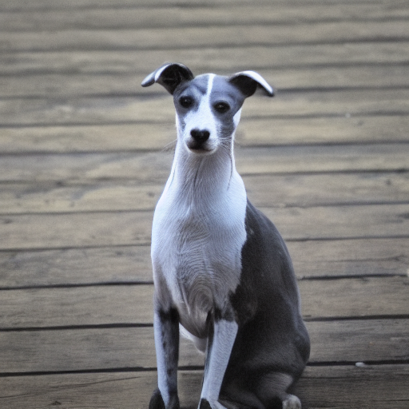
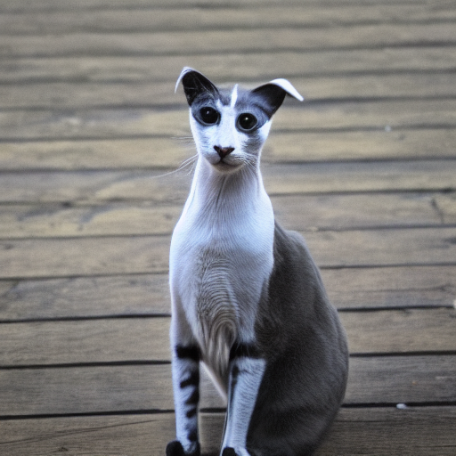
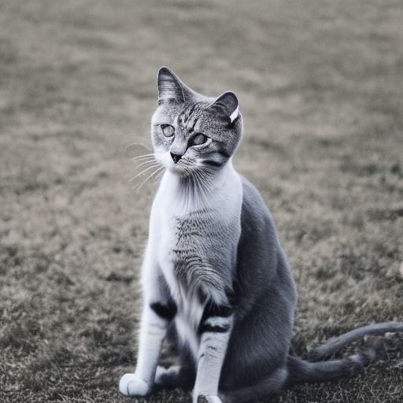
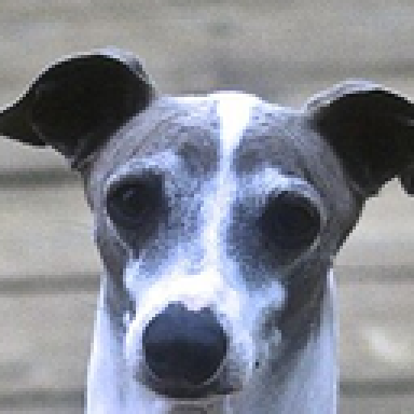
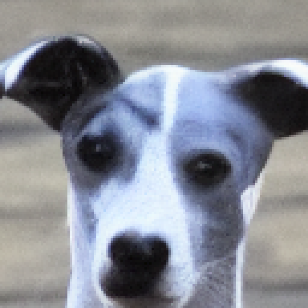
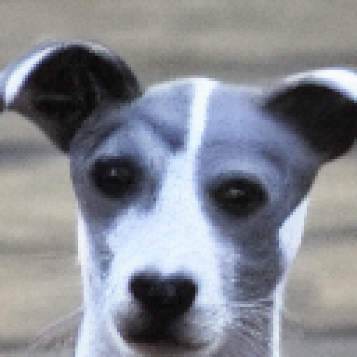
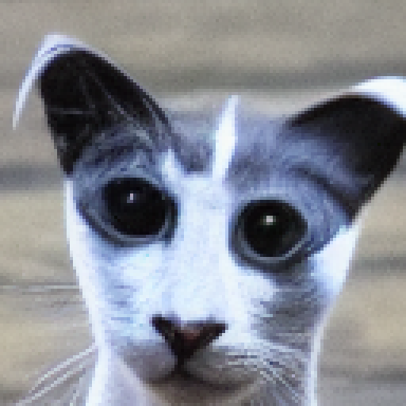
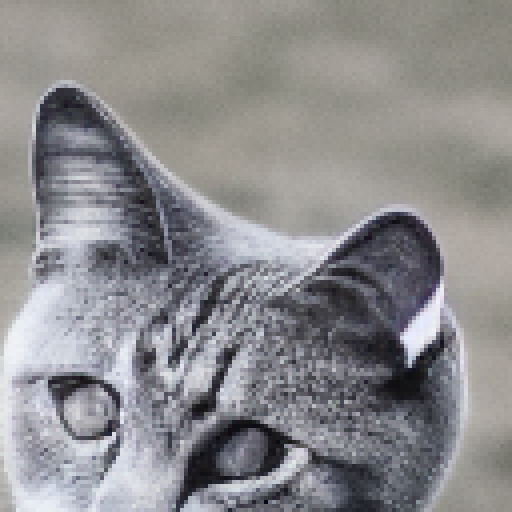
展開數值（先看圖）
| 量 | w1.0_s0.5（現行設定） | w3.0_s0.5 | w7.5_s0.5（標準攻擊） | w7.5_s0.7 |
|---|
| Δclip（對 prompt 的對齊變化） | -0.0023 | +0.0130 | +0.0720 | +0.1181 |
| Δsiglip | -0.0061 | -0.0044 | +0.0432 | +0.1142 |
| LPIPS→原圖 | 0.3799 | 0.3839 | 0.4011 | 0.5957 |
| PSNR→原圖 (dB) | 21.10 | 21.00 | 20.19 | 16.25 |
dog_01
prompt：a cat sitting on the grass
原圖 clip 0.1737
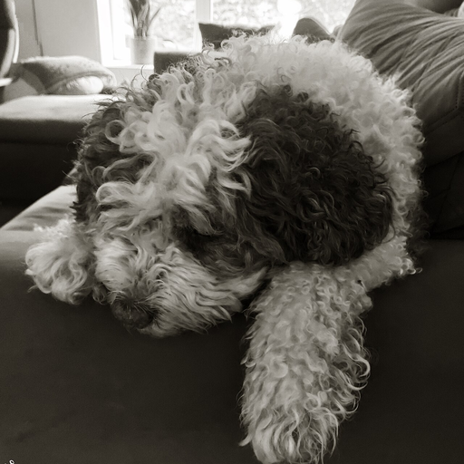
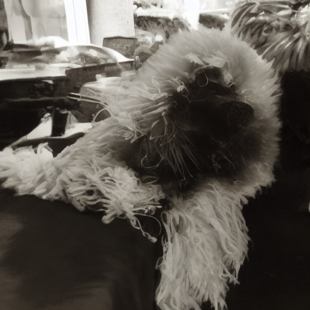
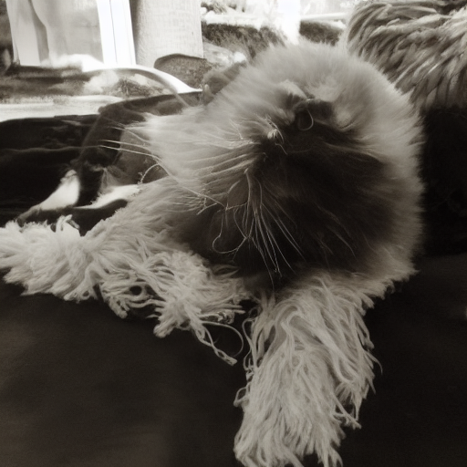
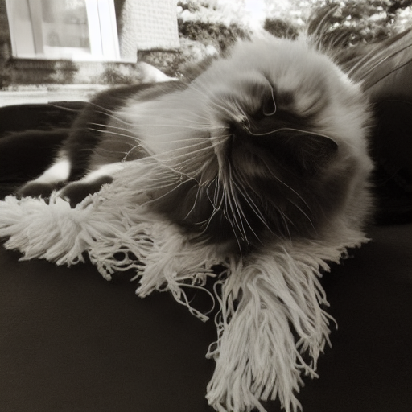
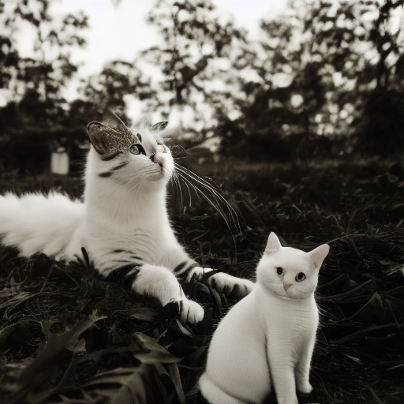

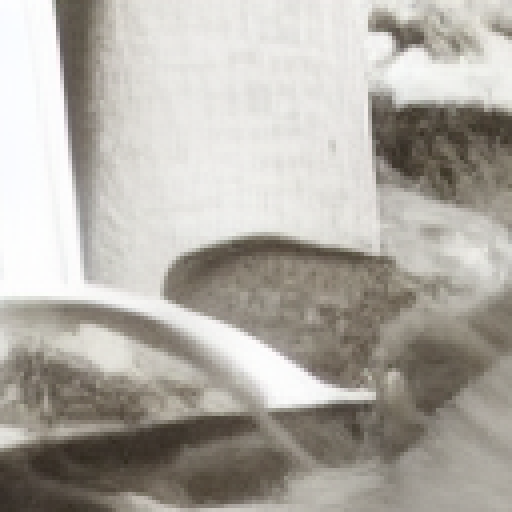
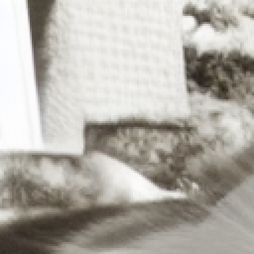
展開數值（先看圖）
| 量 | w1.0_s0.5（現行設定） | w3.0_s0.5 | w7.5_s0.5（標準攻擊） | w7.5_s0.7 |
|---|
| Δclip（對 prompt 的對齊變化） | +0.0009 | +0.0111 | +0.0714 | +0.0996 |
| Δsiglip | +0.0055 | +0.0401 | +0.0453 | +0.0801 |
| LPIPS→原圖 | 0.4864 | 0.4817 | 0.4969 | 0.6575 |
| PSNR→原圖 (dB) | 18.40 | 18.31 | 17.99 | 13.25 |
person_00
prompt：an elderly person with gray hair
原圖 clip 0.1988
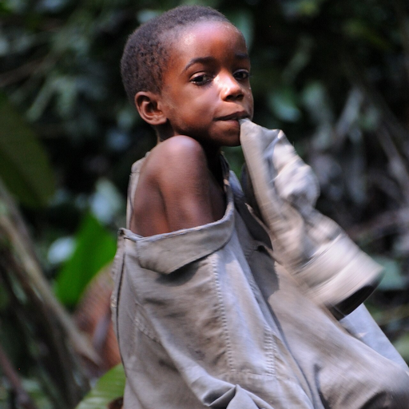
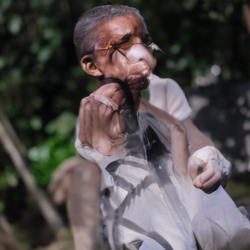
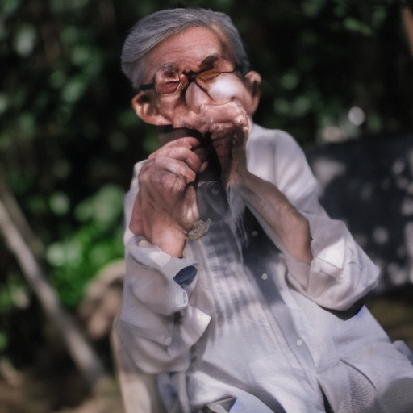
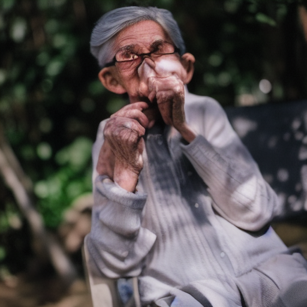
展開數值（先看圖）
| 量 | w1.0_s0.5（現行設定） | w3.0_s0.5 | w7.5_s0.5（標準攻擊） | w7.5_s0.7 |
|---|
| Δclip（對 prompt 的對齊變化） | +0.0431 | +0.0890 | +0.0826 | +0.0863 |
| Δsiglip | +0.0699 | +0.0889 | +0.0957 | +0.1043 |
| LPIPS→原圖 | 0.4868 | 0.4974 | 0.5127 | 0.6181 |
| PSNR→原圖 (dB) | 18.58 | 18.48 | 18.03 | 14.94 |
person_01
prompt：an elderly person with gray hair
原圖 clip 0.1711
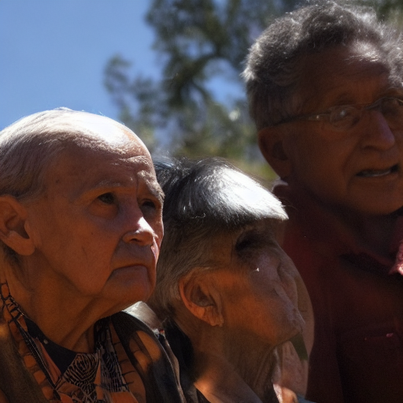
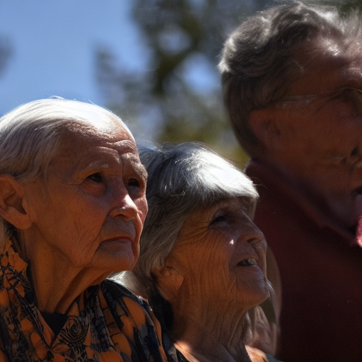
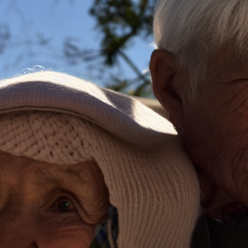

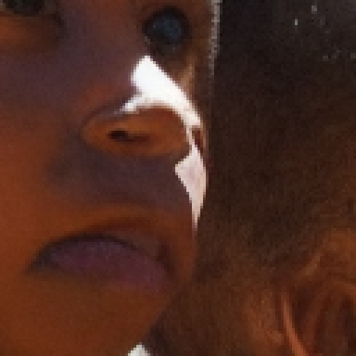
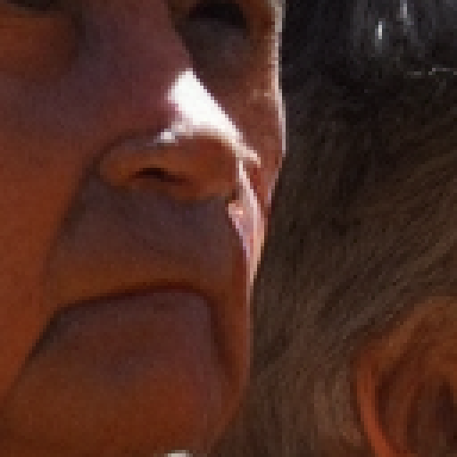
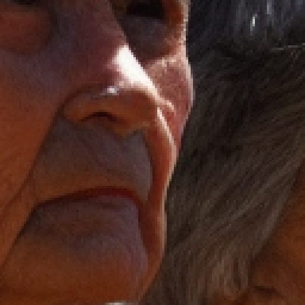
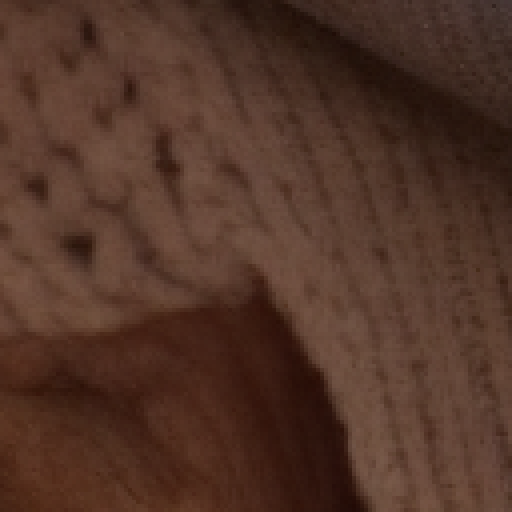
展開數值（先看圖）
| 量 | w1.0_s0.5（現行設定） | w3.0_s0.5 | w7.5_s0.5（標準攻擊） | w7.5_s0.7 |
|---|
| Δclip（對 prompt 的對齊變化） | -0.0003 | +0.0551 | +0.0604 | +0.0928 |
| Δsiglip | +0.0269 | +0.1199 | +0.1255 | +0.1189 |
| LPIPS→原圖 | 0.4741 | 0.5184 | 0.5423 | 0.6343 |
| PSNR→原圖 (dB) | 20.44 | 20.00 | 19.59 | 16.74 |